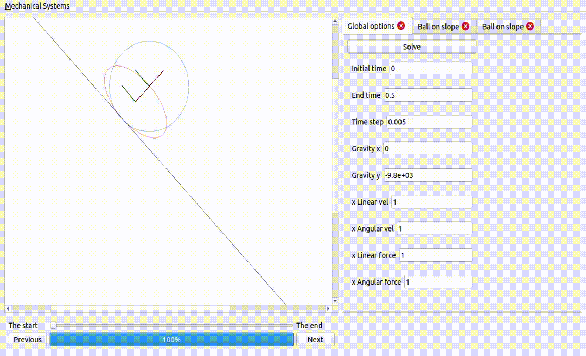
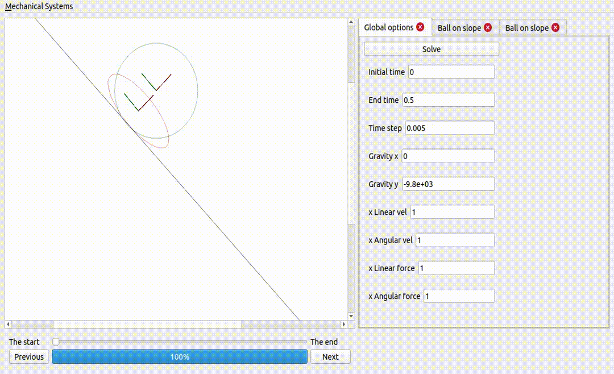
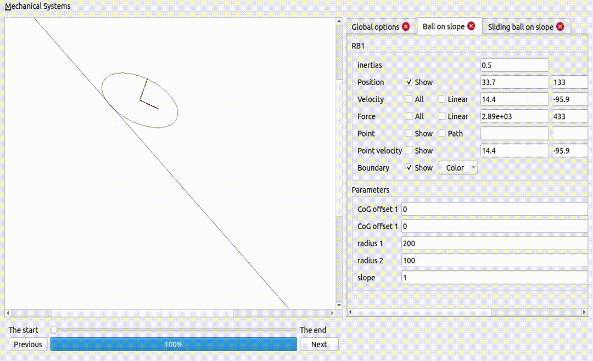
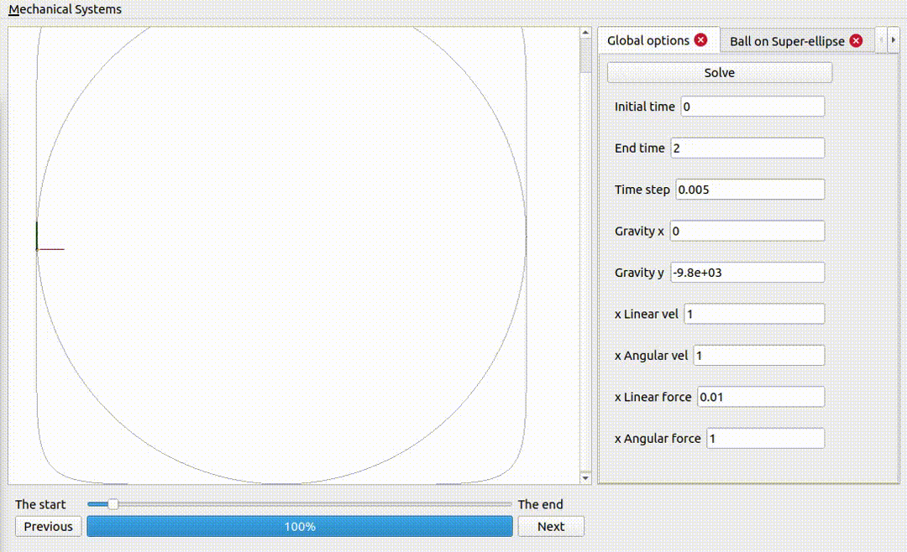
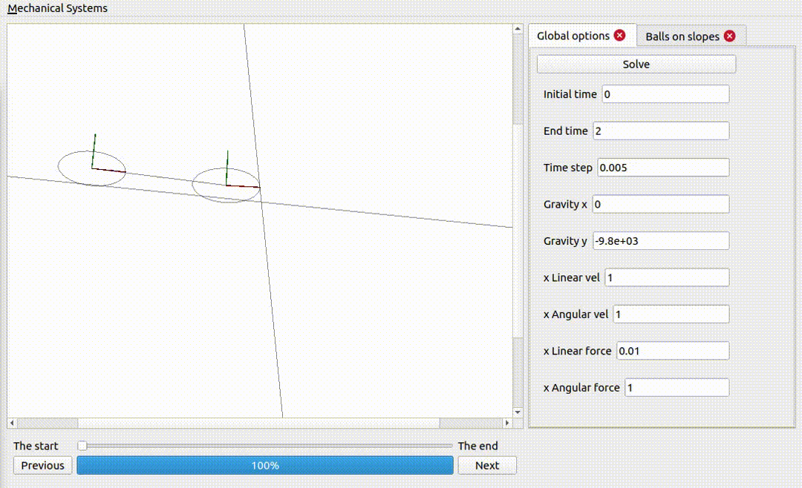
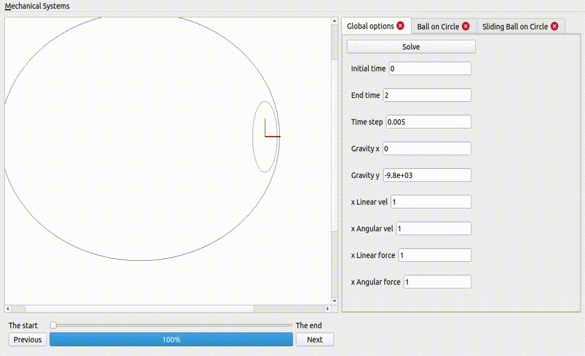
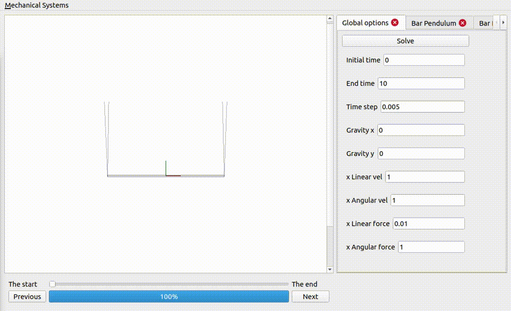

AppImage of Mechnical Systems Simulator
Features
One ball and one ellipse (same mass and inertia), on a non-sliding surface If the ellipse is too flat, it does not fall Two ellipses, one sliding and the other not A ball on a superellipse Notice how the force excerted by the surface is larger when the curvature is larger. Two ellipses coupled together and on non-sliding surfaces Notice how the energy is exchanged from one rigid body to the other: the internal forces do not add or remove any energy, but they can take energy from one rigid body and pass it onto the others. Two ellipses on an ellipse surface Gravity is a potential force: that means the work exerted by gravity on a rigid body does not depend on the path described by that rigid body: it only depends on the initial and final positions of the rigid body. This explains the periodic behaviour observed, where gravity adds and removes energy to the rigid bodies, as they go up and down the surface. A bar pendulum For some choice of parameters a bar pendulum is going to be subject to incredible forces, and in practice it will break DescriptionA mechanical system is a collection of rigid bodies, which are coupled to each other, and where the coupling is described by some constraints. Each rigid follows the equations of motion where the change in linear momentum is equal to the net force applied on the rigid body, and the change in angular momentum is given by the net torque applied on the rigid body. The net wrench can be decompose into a input component, and an internal component. The internal component does not add or remove energy to the system, and it is the internal component that guarantees that the mechanical system respect the constraints regardless of the input wrench, the pose and the the twist of the mechanical system. The pose of a rigid body \(P \in R^{3} \times SO(3)\) is composed of a linear component \(p \in R^{3}\) and an angular component \(R \in SO(3)\) (a rotation matrix). The twist of a rigid body \(V \in R^{3} \times R^{3}\) is composed of a linear component \(v \in R^{3}\) and an angular component \(\omega \in R^{3}\). Finally, the wrench applied on a rigid body \(W \in R^{3} \times R^{3}\) is composed of a linear component \(f \in R^{3}\) (a force) and an angular component \(\tau \in R^{3}\) (a torque). With the later in mind, the kinematic equations can then be expressed by \[ \dot{p} = v, \\ \dot{R} = R S(\omega), \] and the dynamic equations can be expressed by \[ \dot{L} = \frac{d}{dt} (m v) = F_{\text{net}} = F_{\text{input}} + F_{\text{internal}}, \\ \dot{H} = \frac{d}{dt} (R J \omega) = R \tau_{\text{net}} = R (\tau_{\text{input}} + \tau_{\text{internal}}), \] where \(L\) corresponds to the linear momentum (as such, \(\dot{L}\) corresponds to the change in the linear momentum) and \(H\) corresponds to the the angular momentum (as such, \(\dot{H}\) corresponds to the change in the angular momentum). A mechanical system is subject to constraints \[ c(P_1, \ldots, P_N) = 0_m, \] which describe how the rigid bodies are coupled to each other. The internal wrenches can then be found by requiring that \[ \Sigma V_i^{T} W_{i, \text{internal}} = 0, \\ \frac{d^{2}}{dt^{2}} c(P_1, \ldots, P_N) = 0_m, \] where the first condition guarantees that the internal wrenches do not add or remove energy to the system (energy can flow from one rigid body to another though), while the second implies that the constraints will be met in time. A mechanical system can also be subject to contact constraints, where a point of the rigid body is required to move (with or without sliding) on a surface |